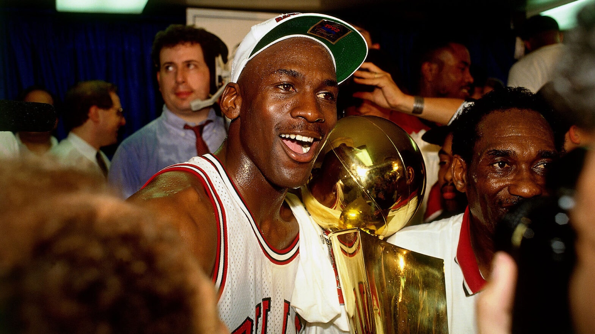

Exploring language teaching, educational realities and pedagogical reflections through academic experiences in rural and urban contexts.
Movies and Games There's something about immersing myself in vast, dark worlds that just hits different. The Fallout series has been a constant companion—the desolation, the choices, the weight of post-apocalyptic survival. Halo, Gears of War, God of War, and GTA pull me in with their raw intensity and storytelling. And the tactical precision of Arma 3? That's where strategy players meets my name. But it's not just games. When I need to decompress, I dive into my deep likes that matches my dark, introspective mood. Fight Club its the chosen one for me, also like Se7en's gritty atmosphere and moral complexity of God fanatics. Interstellar makes me feel small and want me to travel far away of this earth. These games and films not just entertainment for me. They're mirrors reflecting something real about myself, my choices and their consequences.
Date: July 2026
One of the most interesting examples of persuasive language in advertising is Nike's campaign around Michael Jordan and the famous Air Jordan shoes. After the NBA prohibited Jordan from wearing the original black and red sneakers because they violated the league's uniform policy, Nike transformed what could have been a marketing problem into one of the greatest advertising opportunities in history.
From my perspective, Nike's language was powerful because it did not focus only on selling a pair of shoes. Instead, the company created a narrative of rebellion, individuality, and confidence. Rather than presenting Jordan as an athlete following the rules, Nike portrayed him as someone willing to challenge expectations. The slogan and the storytelling encouraged audiences to believe that greatness sometimes requires breaking conventions.
The commercial also demonstrates how language extends beyond words. The combination of visual storytelling, music, narration, and Jordan's image communicates emotions such as ambition, determination, and authenticity. These elements helped consumers associate Nike with personal identity instead of simply athletic equipment.
In my opinion, this campaign explains why Nike became an "unbannable" brand. Although the NBA could regulate what players wore on the court, it could not ban the cultural impact of the Air Jordan brand. The controversy generated curiosity, strengthened Nike's identity, and transformed the shoes into a symbol of basketball, fashion, and popular culture. Today, Air Jordans are not only sports products but also cultural icons recognized around the world, proving that effective language and storytelling can create a legacy that goes far beyond the game itself.
